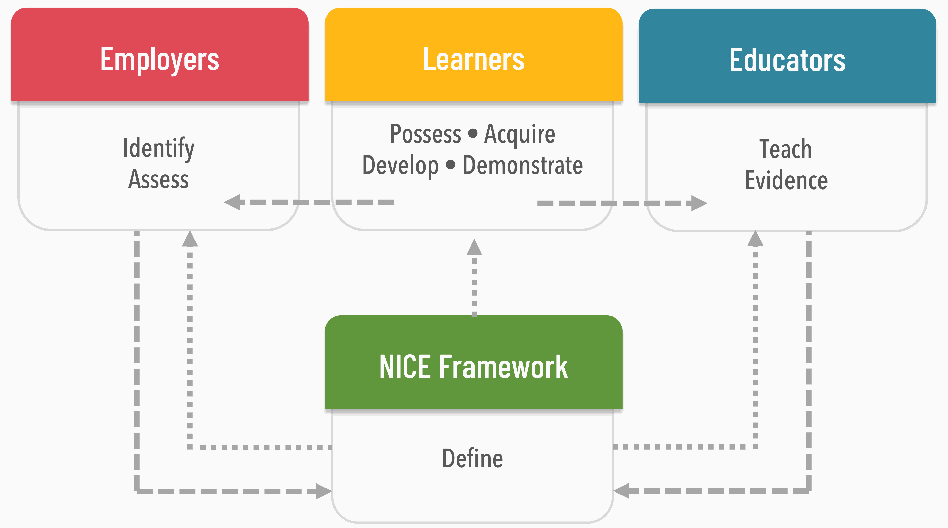
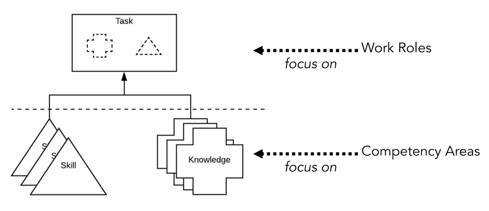

NIST IR 8355 日本語訳
英語タイトル : NICE Framework Competency Areas: Preparing a Job-Ready Cybersecurity Workforce日本語タイトル : NICE フレームワークのコンピテンシー領域：仕事に即応できるサイバーセキュリティ人材の育成
公開日 : 2023-06-21
原文URL : https://csrc.nist.gov/pubs/ir/8355/final
翻訳編集 : 自動生成（有志による非公式の日本語訳）, 原文取得日 : 2026-10-31, 訳文 : 178 / 179 ブロック
[要約] NIST IR 8355 は、Workforce Framework for Cybersecurity（NICE フレームワーク）、NIST Special Publication 800-181 Revision 1 に含まれるコンピテンシー領域を説明する刊行物です。コンピテンシー領域とは、特定の領域でタスクを遂行する能力と相関する、関連する知識記述とスキル記述のまとまりです。本書は、コンピテンシー領域の進化と策定の経緯を含めて詳しく示し、コンピテンシー領域と職務ロールの違いを明らかにし、さまざまな関係者の視点から使用例を示します。最後に、NICE フレームワークのコンピテンシー領域の一覧が、本刊行物とは別に公開・維持されている場所を示します。
NIST Internal Report
NIST 内部報告書
NIST IR 8355
NIST IR 8355
NICE Framework Competency Areas
NICE フレームワークのコンピテンシー領域
Preparing a Job-Ready Cybersecurity Workforce
仕事に即応できるサイバーセキュリティ人材の育成
Karen A. Wetzel
Karen A. Wetzel
This publication is available free of charge from: https://doi.org/10.6028/NIST.IR.8355
本刊行物は次の場所から無料で入手できます: https://doi.org/10.6028/NIST.IR.8355
NIST Internal Report
NIST 内部報告書
NIST IR 8355
NIST IR 8355
NICE Framework Competency Areas
NICE フレームワークのコンピテンシー領域
Preparing a Job-Ready Cybersecurity Workforce
仕事に即応できるサイバーセキュリティ人材の育成
Karen A. Wetzel
Karen A. Wetzel
NICE Applied Security Division Information Technology Laboratory
NICE Applied Security Division Information Technology Laboratory
This publication is available free of charge from: https://doi.org/10.6028/NIST.IR.8355
本刊行物は次の場所から無料で入手できます: https://doi.org/10.6028/NIST.IR.8355
June 2023
2023年6月
［米国商務省の紋章。公的な標章のため、この非公式サイトには掲載していません。原本 PDF を参照してください。］
U.S. Department of Commerce Gina M. Raimondo, Secretary
米国商務省 Gina M. Raimondo 長官
National Institute of Standards and Technology
National Institute of Standards and Technology
Laurie E. Locascio, NIST Director and Under Secretary of Commerce for Standards and Technology
Laurie E. Locascio、NIST 所長兼商務次官（標準・技術担当）
Certain commercial equipment, instruments, software, or materials, commercial or non-commercial, are identified in this paper in order to specify the experimental procedure adequately. Such identification does not imply recommendation or endorsement of any product or service by NIST, nor does it imply that the materials or equipment identified are necessarily the best available for the purpose.
本書では、実験手順を十分に特定するために、商用・非商用を問わず、特定の商用機器、計器、ソフトウェア、または資材を挙げている場合があります。こうした特定は、NIST がそれらの製品やサービスを推奨または保証することを意味せず、挙げられた資材や機器がその目的に最適であるとは限らないことも意味しません。
There may be references in this publication to other publications currently under development by NIST in accordance with its assigned statutory responsibilities. The information in this publication, including concepts and methodologies, may be used by federal agencies even before the completion of such companion publications. Thus, until each publication is completed, current requirements, guidelines, and procedures, where they exist, remain operative. For planning and transition purposes, federal agencies may wish to closely follow the development of these new publications by NIST.
本刊行物には、NIST が法令上の責務に従って現在策定中の他の刊行物への言及が含まれる場合があります。概念や方法論を含む本刊行物の情報は、そうした関連刊行物の完成前であっても、連邦政府機関が利用してもよいです。したがって、各刊行物が完成するまでは、現行の要件、ガイドライン、および手順が存在する場合には、それらが引き続き有効です。計画および移行のため、連邦機関は、NIST によるこれらの新しい刊行物の策定状況を注意深く追うことを検討してもよいです。
Organizations are encouraged to review all draft publications during public comment periods and provide feedback to NIST. Many NIST cybersecurity publications, other than the ones noted above, are available at https://csrc.nist.gov/publications.
組織には、パブリックコメント期間中にすべてのドラフト刊行物を確認し、NIST にフィードバックを提供することが推奨されています。上記以外の多くの NIST サイバーセキュリティ刊行物は https://csrc.nist.gov/publications で入手できます。
NIST Technical Series Policies
NIST Technical Series の方針
Copyright, Use, and Licensing Statements
著作権、使用、およびライセンスに関する声明
NIST Technical Series Publication Identifier Syntax
NIST Technical Series 刊行物識別子の構文
Publication History
刊行履歴
Approved by the NIST Editorial Review Board on 2023-06-01
2023-06-01 に NIST 編集審査委員会（Editorial Review Board）が承認
How to Cite this NIST Technical Series Publication:
本 NIST Technical Series 刊行物の引用方法:
Wetzel KA (2023) NICE Framework Competency Areas: Preparing a Job-Ready Cybersecurity Workforce. (National Institute of Standards and Technology, Gaithersburg, MD), NIST Internal or Interagency Report (IR) NIST IR 8355. https://doi.org/10.6028/NIST.IR.8355
Wetzel KA (2023) NICE Framework Competency Areas: Preparing a Job-Ready Cybersecurity Workforce. (National Institute of Standards and Technology, Gaithersburg, MD), NIST Internal or Interagency Report (IR) NIST IR 8355. https://doi.org/10.6028/NIST.IR.8355
Author ORCID iDs
著者の ORCID iD
Karen A. Wetzel: 0009-0004-0683-808X
Karen A. Wetzel: 0009-0004-0683-808X
Contact Information
連絡先
niceframework@nist.gov
niceframework@nist.gov
NICE National Institute of Standards and Technology Attn: Applied Cybersecurity Division, Information Technology Laboratory 100 Bureau Drive (Mail Stop 2000) Gaithersburg, MD 20899-2000
NICE National Institute of Standards and Technology Attn: Applied Cybersecurity Division, Information Technology Laboratory 100 Bureau Drive (Mail Stop 2000) Gaithersburg, MD 20899-2000
All comments are subject to release under the Freedom of Information Act (FOIA).
すべてのコメントは、情報公開法（FOIA）に基づいて公開される場合があります。
Abstract
要旨
This publication from NICE describes Competency Areas as included in the Workforce Framework for Cybersecurity (NICE Framework), NIST Special Publication 800-181, Revision 1. The NICE Framework is a fundamental reference for describing and sharing information about cybersecurity work. At its core are Task, Knowledge, and Skill (TKS) statements that provide a foundation for learners, including students, job seekers, and employees. These statements are then used to define Competency Areas—clusters of related Knowledge and Skill statements that correlates with one’s capability to perform Tasks in a particular domain—and Work Roles, which are composed of Task statements that constitute work for which someone is responsible or accountable. This document shares more detail about what NICE Framework Competency Areas are, including their evolution and development, clarifies the differences between Competency Areas and Work Roles, and provides example uses for Competency Areas from various stakeholder perspectives, and. Finally, the publication identifies where the NICE Framework list of Competency Areas is separately published and maintained distinct from this publication so it can be updated more frequently as a flexible and contemporary reference resource.
NICE による本刊行物は、Workforce Framework for Cybersecurity (NICE Framework)（NIST Special Publication 800-181 Revision 1）に含まれるコンピテンシー領域について説明します。NICE フレームワークは、サイバーセキュリティ業務を記述し、その情報を共有するための基本的な参照資料です。その中核にあるタスク（Task）、知識（Knowledge）、スキル（Skill）の記述（TKS 記述）は、学生、求職者、従業員を含む学習者にとっての基盤となります。これらの記述は、コンピテンシー領域と職務ロール（Work Role）の定義に用いられます。コンピテンシー領域とは、特定の領域でタスクを遂行する能力と相関する、関連した知識記述とスキル記述のまとまりです。職務ロールは、ある人が責任を負う、または説明責任を負う業務を構成するタスク記述からなります。本書では、コンピテンシー領域の進化と策定の経緯を含め、その内容を詳しく説明し、コンピテンシー領域と職務ロールの違いを明らかにするとともに、さまざまな関係者の視点からコンピテンシー領域の使用例を示し、最後に、柔軟で現代的な参照資源としてより頻繁に更新できるよう、NICE フレームワークのコンピテンシー領域一覧が本刊行物とは別に公開・維持されている場所を示します。
Keywords
キーワード
competency; Competency Area; cyber; cybersecurity; cyberspace; education; knowledge; risk management; role; security; skill; task; team; training; workforce; work role.
competency; Competency Area; cyber; cybersecurity; cyberspace; education; knowledge; risk management; role; security; skill; task; team; training; workforce; work role.
Reports on Computer Systems Technology
コンピュータシステム技術に関する報告書
The Information Technology Laboratory (ITL) at the National Institute of Standards and Technology (NIST) promotes the U.S. economy and public welfare by providing technical leadership for the Nation’s measurement and standards infrastructure. ITL develops tests, test methods, reference data, proof of concept implementations, and technical analyses to advance the development and productive use of information technology. ITL’s responsibilities include the development of management, administrative, technical, and physical standards and guidelines for the cost-effective security and privacy of other than national security-related information in federal information systems.
国立標準技術研究所（NIST）の情報技術研究所（ITL）は、米国の測定・標準インフラに技術面でのリーダーシップを発揮することで、米国経済と公共の福祉を促進しています。ITL は、情報技術の開発と生産的な利用を進めるために、試験、試験方法、参照データ、概念実証実装、および技術分析を開発しています。ITL の責務には、連邦情報システムにおける国家安全保障関連以外の情報について、費用対効果の高いセキュリティとプライバシーを実現するための、管理上、事務上、技術上、および物理上の標準とガイドラインの策定が含まれます。
Audience
想定読者
The NICE Framework serves as a bridge between employers and education, training, and certification providers as well as a tool to help learners determine needs and demonstrate capabilities. A standardized approach to Competency Areas provides accessible information about what individuals need to know and be able to do, enables the development of more effective learning, and establishes regular processes to consistently describe and validate a learner’s capabilities. Therefore, the following are both stakeholders and the audience for this work: employers; workforce development and human resources professionals; education, training, and certification providers; and learners.
NICE フレームワークは、雇用主と、教育・訓練・認定の提供者とをつなぐ架け橋であり、学習者が必要なものを見極め、能力を示すのを助けるツールでもあります。コンピテンシー領域への標準化されたアプローチは、個人が何を知り、何ができる必要があるかについて利用しやすい情報を提供し、より効果的な学習の開発を可能にし、学習者の能力を一貫して記述し検証するための定期的なプロセスを確立します。したがって、次の者が本作業の関係者であり、想定読者でもあります。雇用主、人材開発および人事の専門家、教育・訓練・認定の提供者、および学習者です。
Document Conventions
文書の表記規則
The terms “shall” and “shall not” indicate requirements to be followed strictly in order to conform to the publication and from which no deviation is permitted. The terms “should” and “should not” indicate that among several possibilities one is recommended as particularly suitable, without mentioning or excluding others, or that a certain course of action is preferred but not necessarily required, or that (in the negative form) a certain possibility or course of action is discouraged but not prohibited. The terms “may” and “need not” indicate a course of action permissible within the limits of the publication. The terms “can” and “cannot” indicate a possibility and capability, whether material, physical or causal.
「shall」および「shall not」は、本刊行物に適合するために厳密に従わなければならない要件を示し、逸脱は認められません。「should」および「should not」は、複数の可能性の中で、他を挙げたり除外したりせずに一つが特に適していると推奨されること、ある行動方針が好ましいが必須ではないこと、または（否定形では）ある可能性や行動方針が推奨されないが禁止されてはいないことを示します。「may」および「need not」は、本刊行物の範囲内で許容される行動方針を示します。「can」および「cannot」は、物質的、物理的、または因果的な可能性と能力を示します。
Those seeking a career in cybersecurity or performing cybersecurity work—including students, job seekers, and employees—are referenced as Learners. This moniker highlights that each member of the workforce is also a lifelong learner.
サイバーセキュリティの分野でのキャリアを求める人や、サイバーセキュリティ業務に従事する人（学生、求職者、従業員を含みます）は、学習者（Learners）と呼ばれます。この呼称は、労働力の一人ひとりが生涯にわたる学習者でもあることを強調しています。
Note to Readers
読者へのメモ
This publication assumes existing knowledge of the Workforce Framework for Cybersecurity (NICE Framework), NIST Special Publication 800-181, Revision 1, and is expected to be read in that context. This document was released in draft form for comment twice prior to this publication. The first draft was released in March 2021, along with an initial list of proposed Competency Areas. A second draft was released in December 2021. Feedback received on those drafts, conversations with NICE community members, and insights from workshops that brought together subject matter experts on this topic have matured understanding of NICE Framework Competency Areas. The adjustments to this document are the result. Any subsequent draft(s) may be further adjusted, including the separately provided Competency Areas, their descriptions, and associated Task, Knowledge, and Skill (TKS) statements.
本刊行物は、Workforce Framework for Cybersecurity (NICE Framework)、NIST Special Publication 800-181 Revision 1 についての知識を前提としており、その文脈で読まれることを想定しています。本書は、本刊行物の前に、意見募集のためのドラフトとして 2 回公開されています。最初のドラフトは、提案されたコンピテンシー領域の初期の一覧とともに 2021 年 3 月に公開され、2 回目のドラフトは 2021 年 12 月に公開されました。これらのドラフトに寄せられたフィードバック、NICE コミュニティのメンバーとの対話、およびこのテーマの専門家を集めたワークショップから得られた知見により、NICE フレームワークのコンピテンシー領域への理解が深まりました。本書の修正は、その結果です。今後作成されるドラフトは、別途提供されるコンピテンシー領域、その説明、および関連するタスク・知識・スキル（TKS）記述を含め、さらに修正される可能性があります。
Patent Disclosure Notice
特許開示通知
NOTICE: ITL has requested that holders of patent claims whose use may be required for compliance with the guidance or requirements of this publication disclose such patent claims to ITL. However, holders of patents are not obligated to respond to ITL calls for patents and ITL has not undertaken a patent search in order to identify which, if any, patents may apply to this publication.
通知: ITL は、本刊行物のガイダンスまたは要件への準拠に使用が必要となる可能性のある特許クレームの保有者に対し、そうした特許クレームを ITL に開示するよう求めています。ただし、特許の保有者には ITL の特許募集に応じる義務はなく、ITL も、本刊行物に該当する特許があるかどうかを特定するための特許調査は行っていません。
As of the date of publication and following call(s) for the identification of patent claims whose use may be required for compliance with the guidance or requirements of this publication, no such patent claims have been identified to ITL.
発行日の時点で、本刊行物のガイダンスまたは要件への準拠に使用が必要となる可能性のある特許クレームの特定を求める募集が行われましたが、そのような特許クレームは ITL に対して特定されていません。
No representation is made or implied by ITL that licenses are not required to avoid patent infringement in the use of this publication.
ITL は、本刊行物の使用において特許侵害を避けるためにライセンスが不要であると表明も示唆もしていません。
Table of Contents
目次
List of Tables
表の一覧
List of Figures
図の一覧
Acknowledgments
謝辞
The National Institute of Standards and Technology (NIST) would like to particularly acknowledge the work of William Newhouse (NIST), Kevin Sanchez-Cherry (Department of Transportation), Leo Van Duyn (JPMorgan Chase & Co.), and Clarence Williams (Department of Veterans Affairs), whose work provided the basis from which this publication came. NIST also wishes to thank these team members from the NICE Framework Core Authoring Team that includes representatives from numerous departments and agencies in the United States Federal Government whose dedicated efforts contributed significantly to that publication:
米国国立標準技術研究所（NIST）は、William Newhouse（NIST）、Kevin Sanchez-Cherry（Department of Transportation）、Leo Van Duyn（JPMorgan Chase & Co.）、Clarence Williams（Department of Veterans Affairs）の各氏の業績に特に謝意を表します。その業績が本刊行物の基礎となりました。また NIST は、米国連邦政府の多数の省庁の代表者を含む NICE フレームワーク中核執筆チームの次のメンバーにも感謝します。彼らの献身的な努力が本刊行物に大きく貢献しました。
Lisa Dorr, Department of Homeland Security
Ryan Farr, Department of Defense
Pam Frugoli, Department of Labor
Matt Isnor, Department of Defense
Patrick Johnson, Department of Defense
Rodney Petersen, National Institute of Standards and Technology
Danielle Santos, National Institute of Standards and Technology
Stephanie Shively, Department of Defense
Kenneth Vrooman, Cybersecurity and Infrastructure Security Agency
Lisa Dorr, Department of Homeland Security
Ryan Farr, Department of Defense
Pam Frugoli, Department of Labor
Matt Isnor, Department of Defense
Patrick Johnson, Department of Defense
Rodney Petersen, National Institute of Standards and Technology
Danielle Santos, National Institute of Standards and Technology
Stephanie Shively, Department of Defense
Kenneth Vrooman, Cybersecurity and Infrastructure Security Agency
Finally, the team appreciates and acknowledges the contributions of those who established previous editions of cybersecurity workforce frameworks as described at the history page of the NICE Framework Resource Center.
最後に、チームは、NICE Framework Resource Center の歴史ページに記載されているように、サイバーセキュリティ人材フレームワークの従来版を確立した人々の貢献に感謝し、謝意を表します。
1. Introduction
1. はじめに
NICE released the Workforce Framework for Cybersecurity (NICE Framework), NIST Special Publication 800-181, Revision 1, in November 2020 [1]. The revised NICE Framework established a set of building blocks—Task, Knowledge, and Skill statements—that describe cybersecurity work and what someone must know or be able to do to complete that work. It also identifies common ways these building blocks can be applied, most notably through Work Roles and, new in the NICE Framework revision 1, Competency Areas.1
NICE は 2020 年 11 月に、Workforce Framework for Cybersecurity (NICE Framework)、NIST Special Publication 800-181 Revision 1 を公開しました [1]。改訂された NICE フレームワークは、サイバーセキュリティ業務と、その業務を遂行するために人が知る必要のあること、または実行できる必要のあることを記述する一連の構成要素（タスク、知識、スキルの記述）を確立しました。また、これらの構成要素を適用する一般的な方法も示しています。最も顕著な方法は職務ロールであり、NICE フレームワーク Revision 1 で新たに加わったのがコンピテンシー領域です。1
NICE Framework Competency Areas group together related Task, Knowledge, and Skill (TKS) statements to form a higher-level description of capabilities typically needed in a particular cybersecurity domain. By clearly defining what a person needs to know and do to perform well in a defined area of cybersecurity work, Competency Areas provide a means to communicate the needs of employers, the capabilities of learners (which, for the purposes of the NICE Framework includes students, job seekers, and employees), and the value of education, training, and certifications.
NICE フレームワークのコンピテンシー領域は、関連するタスク、知識、スキル（TKS）の記述をまとめ、特定のサイバーセキュリティ領域で通常必要とされる能力のより高次の記述を形成します。サイバーセキュリティ業務の定義された領域で優れた成果を上げるために人が何を知り、何を行う必要があるかを明確に定義することで、コンピテンシー領域は、雇用主のニーズ、学習者（NICE フレームワークの目的上、学生、求職者、従業員を含みます）の能力、そして教育・訓練・資格認定の価値を伝える手段を提供します。
Learners: Individuals who perform cybersecurity work, including students, job seekers, and employees.
学習者: 学生、求職者、従業員を含む、サイバーセキュリティ業務を行う個人。
Competency Areas are defined via an employer-driven approach that enables education and training providers to be responsive to employer or sector needs by creating experiences that help learners develop and demonstrate relevant and needed capabilities. They correlate with performance on the job and can be improved through education, training (including on-the-job and apprenticeships), or other learning experiences.
コンピテンシー領域は、雇用主主導のアプローチで定義されます。これにより、教育・訓練の提供者は、学習者が関連する必要な能力を身につけ、示すのに役立つ経験を作り出すことで、雇用主や業界のニーズに対応できます。コンピテンシー領域は職務上の成果と相関し、教育、訓練（実務を通じた訓練や見習い制度を含みます）、またはその他の学習経験を通じて向上させることができます。
1.1. Purpose
1.1. 目的
This publication provides readers background information on NICE Framework Competency Areas and why they were introduced in the revised NICE Framework, describes how the Competency Areas are defined and written, and shares with readers ways NICE Framework Competency Areas can be used.
本刊行物は、NICE フレームワークのコンピテンシー領域についての背景情報と、改訂版 NICE フレームワークでそれが導入された理由を読者に提供し、コンピテンシー領域がどのように定義・記述されるかを説明し、NICE フレームワークのコンピテンシー領域の使い方を紹介します。
1.2. Scope
1.2. 適用範囲
The Competency Areas described in this publication are part of the Workforce Framework for Cybersecurity (NICE Framework), which provides a lexicon for describing cybersecurity work and the individuals who do that work. The NICE Framework considers the “cybersecurity workforce” to include not only those whose primary focus is on cybersecurity but also those who need specific cybersecurity-related knowledge and skills to properly manage cybersecurity-related risks to the enterprise.
本刊行物で説明するコンピテンシー領域は、Workforce Framework for Cybersecurity (NICE Framework) の一部です。このフレームワークは、サイバーセキュリティ業務と、その業務を行う個人を記述するための語彙を提供します。NICE フレームワークは、「サイバーセキュリティ人材」に、サイバーセキュリティを主たる業務とする人だけでなく、エンタープライズのサイバーセキュリティ関連リスクを適切に管理するために、サイバーセキュリティに関する特定の知識やスキルを必要とする人も含めて考えています。
2. Competency Areas and the NICE Framework
2. コンピテンシー領域と NICE フレームワーク
The introduction of Competency Areas into the NICE Framework is a response to a growing need to better identify and secure talent through skills- and competency-based hiring. Hiring based only on degrees increases the likelihood of excluding qualified candidates, particularly for jobs related to emerging technologies. A shift to competency-based hiring and promotion ensures that the individuals most capable of performing the roles and responsibilities required of a specific position are those selected for that position. With the inclusion of Competency Areas, the NICE Framework provides a means of helping the NICE Framework users shift to competency-based hiring practices.
NICE フレームワークへのコンピテンシー領域の導入は、スキルやコンピテンシーに基づく採用を通じて、人材をより適切に見極め、確保する必要性が高まっていることへの対応です。学位のみに基づく採用では、特に新興技術に関連する職務で、適格な候補者を除外してしまう可能性が高まります。コンピテンシーに基づく採用と昇進へ移行することで、特定の職位に求められる役割と責任を最も遂行できる人が、その職位に選ばれるようになります。コンピテンシー領域を含めることで、NICE フレームワークは、利用者がコンピテンシーに基づく採用慣行へ移行するのを支援する手段を提供します。
Competency Areas use an employer-driven approach to group together related Knowledge and Skill statements that correlate with one’s capability to perform Tasks in a particular domain. Over time, NICE may work with the cybersecurity community to introduce new Competency Areas or update or retire existing Competency Areas in response to evolving needs.
コンピテンシー領域は、雇用主主導のアプローチを用いて、特定の領域でタスクを遂行する能力と相関する、関連する知識記述とスキル記述をまとめます。NICE は、時間をかけて、サイバーセキュリティコミュニティと協力し、変化するニーズに応じて、新しいコンピテンシー領域の導入や、既存のコンピテンシー領域の更新・廃止を行う場合があります。
NICE Framework Competency Areas are complementary to Work Roles and provide a means to assess learner capabilities in the defined areas. (See Section 2.3, Competency Areas and Work Roles, for more information about how Competency Areas differ from and work in conjunction with Work Roles.)
NICE フレームワークのコンピテンシー領域は職務ロールを補完するものであり、定義された領域における学習者の能力を評価する手段を提供します。（コンピテンシー領域が職務ロールとどう異なり、どう連携するかの詳細は、2.3 節「コンピテンシー領域と職務ロール」を参照してください。）
2.1. Evolution of NICE Framework Competency Areas
2.1. NICE フレームワークのコンピテンシー領域の進化
NICE Framework Competency Areas were first introduced in the NIST Special Publication 800-181 in the 2020 revision, but they also derive from earlier work. The first version of the National Cybersecurity Workforce Framework 1.0 (April 2013), which preceded and formed the basis for NIST SP 800-181, included a mapping of Knowledge, Skill, and Ability (KSA) statements to “competencies.”2
NICE フレームワークのコンピテンシー領域は、2020 年改訂版の NIST Special Publication 800-181 で初めて導入されましたが、それ以前の取り組みにも由来しています。NIST SP 800-181 に先行し、その基礎となった National Cybersecurity Workforce Framework 1.0 の最初の版（2013 年 4 月）には、知識・スキル・能力（KSA）の記述を「コンピテンシー」に対応付けたものが含まれていました。2
These competencies pulled from a 2011 U.S. Office of Personnel Management (OPM) memorandum that introduced a “Competency Model for Cybersecurity,” which itself followed a coordinated effort with the Federal Chief Information Officers (CIO) Council and NICE in November 2009 [3].3 The OPM model presented 117 competencies related to four occupation series and the pay grades of personnel in those occupations. A subject matter expert panel review of the OPM model conducted at that time identified 50 competencies to align with the NICE Framework KSAs found in five of the seven categories of work.4
これらのコンピテンシーは、2011 年の米国人事管理局（OPM）の覚書から取り入れられたものです。この覚書は「サイバーセキュリティのコンピテンシーモデル」を導入したもので、2009 年 11 月の連邦最高情報責任者（CIO）評議会および NICE との連携した取り組みに続くものでした [3]。3 OPM モデルは、4 つの職種系列と、それらの職種に就く職員の給与等級に関連する 117 のコンピテンシーを示していました。当時行われた OPM モデルの専門家パネルによる審査では、7 つの業務カテゴリのうち 5 つに見られる NICE フレームワークの KSA に対応させる 50 のコンピテンシーが特定されました。4
Prior to publishing NIST SP 800-181in 2017, consideration was given as to whether competencies should be included, but it was decided not to maintain them as part of the NICE Framework at that time. Inclusion of competencies in the NICE Framework was revisited for the 2020 publication, when they were added to the publication as a means of applying TKS statements, along with Work Roles. In March 2021, a draft list of “competencies” was released for comment. Feedback received during that comment period, as well as stakeholder conversations held via a workshop and in other settings, informed the next stage of development, so that a clearer understanding of this new approach could be made. The result is a shift from “competencies” to the current “Competency Areas” described herein. Although the overall purpose of Competency Areas remains the same, this new phrasing better signals an approach that broadly defines the knowledge and skills one needs to be capable in a defined domain, distinct from one’s proficiency in completing a single task. The list of Competency Areas themselves, though derived from and informed by earlier efforts, is an evolution of that work and will continue to be updated and adjusted in response to the shifting cybersecurity environment.5
2017 年に NIST SP 800-181 を公開する前に、コンピテンシーを含めるべきかどうかが検討されましたが、当時は NICE フレームワークの一部として維持しないことが決まりました。NICE フレームワークにコンピテンシーを含めることは、2020 年の刊行物に向けて再検討され、職務ロールとともに TKS 記述を適用する手段として刊行物に加えられました。2021 年 3 月には、「コンピテンシー」のドラフト一覧が意見募集のために公開されました。その意見募集期間中に寄せられたフィードバックと、ワークショップおよびその他の場で行われた関係者との対話は、次の開発段階に反映され、この新しいアプローチをより明確に理解できるようになりました。その結果、本書で説明する現在の「コンピテンシー領域」へと、「コンピテンシー」から移行しました。コンピテンシー領域の全体的な目的は変わりませんが、この新しい表現は、単一のタスクを完了する際の習熟度とは異なり、定義された領域で能力を発揮するために必要な知識とスキルを広く定義するアプローチをよりよく示しています。コンピテンシー領域の一覧そのものは、以前の取り組みに由来し、それに基づいていますが、その取り組みを発展させたものであり、変化するサイバーセキュリティ環境に応じて、今後も更新・調整されていきます。5
2.2. Defining Competency Areas
2.2. コンピテンシー領域の定義
Competency Areas offer a high-level perspective to defined areas of cybersecurity work and support an inclusive, assessment-based approach to determine capabilities. An assessment-based approach allows applicant pools to be broadened and to identify candidates more successfully, particularly in areas such as emerging and rapidly evolving technologies. They can also be used to identify career paths, to determine current and future workforce demands, and when developing education, training, or other learning experiences to meet defined needs.
コンピテンシー領域は、定義されたサイバーセキュリティ業務の領域に対する高次の視点を提供し、能力を判断するための、評価に基づく包摂的なアプローチを支えます。評価に基づくアプローチにより、特に新興技術や急速に進化する技術などの分野で、応募者の母集団を広げ、候補者をより適切に見極めることができます。また、キャリアパスの特定、現在および将来の人材需要の把握、定義されたニーズを満たす教育、訓練、その他の学習経験の開発にも使えます。
Competency Area: A cluster of related Knowledge and Skill statements that correlates with one’s capability to perform Tasks in a particular domain. Competency Areas can help learners discover areas of interest, inform career planning and development, identify gaps for knowledge and skills development, and provide a means of assessing or demonstrating a learner’s capabilities in the domain.
コンピテンシー領域: 特定の領域でタスクを遂行する能力と相関する、関連する知識記述とスキル記述のまとまり。コンピテンシー領域は、学習者が関心のある分野を見つけ、キャリアの計画と開発に役立て、知識とスキルの開発におけるギャップを特定し、その領域での学習者の能力を評価または実証する手段を提供するのに役立ちます。
Competency Areas consist of a name, description of the area, and group of associated TKS statements.
コンピテンシー領域は、名称、領域の説明、および関連する TKS 記述のグループで構成されます。
Accordingly, instead of specifying only the work to be done (Tasks) or what is needed to do the work (Knowledge and Skills), it’s about determining a learner’s overall capability for that area of cybersecurity work.6 Competency Areas offer an opportunity to increase alignment and coordination between employers, learners, and education, training, and certification providers (see Fig. 1. NICE Framework Competency Area Stakeholders).
したがって、行うべき業務（タスク）や、その業務を行うために必要なもの（知識とスキル）だけを指定するのではなく、そのサイバーセキュリティ業務の領域に対する学習者の総合的な能力を判断することが重要になります。6 コンピテンシー領域は、雇用主、学習者、および教育・訓練・認定の提供者の間の整合と調整を高める機会を提供します（図 1「NICE フレームワークのコンピテンシー領域の関係者」を参照）。

NICE Framework の Competency Area の関係者を示す図です。上段に3つの箱が並びます。「Employers」（Identify、Assess）、「Learners」（Possess • Acquire、Develop • Demonstrate）、「Educators」（Teach、Evidence）です。その下に「NICE Framework」（Define）の箱があります。破線の矢印が Learners から Employers と Educators へ、また Employers と Educators から NICE Framework の箱へ向かいます。点線の矢印が NICE Framework の箱から Employers、Learners、Educators へ向かいます。
Fig. 1. NICE Framework Competency Area Stakeholders
図 1. NICE フレームワークのコンピテンシー領域の関係者
2.3. Competency Areas and Work Roles
2.3. コンピテンシー領域と職務ロール
NICE Framework Competency Areas and Work Roles are complementary and may be used together or separately. However, there are differences. While Work Roles focus on the work to be done (Task statements), Competency Areas focus on what a learner must know or be able to do (Knowledge and Skill statements) to complete that work (see Fig. 2. TKS Statements, Competency Areas, and Work Roles).
NICE フレームワークのコンピテンシー領域と職務ロールは相互に補完的であり、組み合わせても、別々に使ってもよいです。ただし、違いもあります。職務ロールは行うべき業務（タスク記述）に焦点を当てますが、コンピテンシー領域は、その業務を完了するために学習者が知っていなければならないこと、またはできなければならないこと（知識記述とスキル記述）に焦点を当てます（図 2「TKS 記述、コンピテンシー領域、および職務ロール」を参照）。

TKS ステートメント、Competency Area、Work Role の関係を示す図です。「Task」の箱（破線の十字と三角形を含む）が破線の水平線の上にあります。線の下には「Skill」と書かれた重なった三角形と「Knowledge」と書かれた重なった十字形があり、矢印で上の Task の箱につながります。「Work Roles focus on」の矢印が Task の段を指し、「Competency Areas focus on」の矢印が Knowledge と Skill の段を指します。
Fig. 2. TKS Statements, Competency Areas, and Work Roles
図 2. TKS 記述、コンピテンシー領域、および職務ロール
Competency Areas help address employers’ capability needs more broadly, while Work Roles are used when defining specific positions and responsibilities. Finally, assessment is typically based on the Competency Area as a whole, whereas assessment for Work Roles typically occurs at the Task level.
コンピテンシー領域は、雇用主の能力に関するニーズに、より広く対応するのに役立ちます。一方、職務ロールは、特定の職位と責任を定義するときに使われます。最後に、評価は通常、コンピテンシー領域全体に基づいて行われるのに対し、職務ロールの評価は通常、タスクのレベルで行われます。
Table 1. NICE Framework Competency Areas vs. Work Roles
表 1. NICE フレームワークのコンピテンシー領域と職務ロールの比較
| Competency Areas | Work Roles |
|---|---|
| Learner focused | Work focused |
| Help address employer needs | Help define positions and responsibilities |
| Assessment is typically based on a Competency Area as a whole | Assessment typically occurs at the Task level |
| コンピテンシー領域 | 職務ロール |
|---|---|
| 学習者に焦点 | 業務に焦点 |
| 雇用主のニーズへの対応に役立つ | 職位と責任の定義に役立つ |
| 評価は通常、コンピテンシー領域全体に基づく | 評価は通常、タスクのレベルで行われる |
Work Roles represent a defined area of work that is commonly agreed upon in many different types of organizations and sectors. Competency Areas, however, may represent emerging areas that aren’t yet broadly incorporated into defined Work Roles, capability that pulls from multiple Work Roles, and fundamental areas of expertise in cybersecurity.
職務ロールは、さまざまな種類の組織や分野で広く合意されている、定義された業務の領域を表します。一方、コンピテンシー領域は、まだ定義された職務ロールに広く取り込まれていない新興の領域、複数の職務ロールから集めた能力、およびサイバーセキュリティにおける専門性の基本的な領域を表す場合があります。
3. Competency Area Development
3. コンピテンシー領域の策定
The following guidelines are used for the development of individual Competency Areas as part of the NICE Framework. Competency Areas:
NICE フレームワークの一部として個々のコンピテンシー領域を策定する際には、次のガイドラインを使います。コンピテンシー領域は、次のとおりです。
•May used independently of Work Roles
•職務ロールとは独立して使ってもよい
•May be additive to or overlaid onto one or more Work Roles
•1 つ以上の職務ロールに追加したり、重ねて適用したりしてもよい
•May span multiple Work Roles (i.e., incorporate Knowledge and Skill statements from multiple Work Roles)
•複数の職務ロールにまたがってもよい（すなわち、複数の職務ロールの知識記述とスキル記述を取り込む）
•May represent emerging domains that do not yet have established Work Roles
•まだ職務ロールが確立されていない新興の領域を表してもよい
In addition, Competency Areas:
さらに、コンピテンシー領域は、次のとおりです。
•Do not duplicate existing Work Roles
•既存の職務ロールと重複しない
Competency Areas are made up of the following components:
コンピテンシー領域は、次の構成要素からなります。
1.Competency Area Title: The name of the Competency Area; the title clearly signals to all stakeholders the area that will be described.
1.コンピテンシー領域のタイトル: コンピテンシー領域の名称。タイトルは、記述される領域をすべての関係者に明確に示します。
2.Competency Area Description: The description should:
2.コンピテンシー領域の説明: 説明は次のようにします。
a.Begin with “This Competency Area describes a learner’s capabilities related to….” Using the same standard language to introduce each description serves as a signpost for readers that it is a Competency Area description while focusing the competency onto the learner at the onset.
a.「This Competency Area describes a learner’s capabilities related to…」で始めます。 各説明の冒頭に同じ標準的な表現を使うことで、それがコンピテンシー領域の説明であることを読者に示す目印となり、コンピテンシーの焦点を最初から学習者に合わせます。
b.Define the Competency Area simply and clearly. The Competency Areas should be defined using plain language. Anyone reading the description should be able to quickly and easily understand the scope and meaning of the Competency Area.
b.コンピテンシー領域を簡潔かつ明確に定義します。 コンピテンシー領域は平易な言葉で定義すべきです。説明を読む人は誰でも、そのコンピテンシー領域の範囲と意味を素早く簡単に理解できなければなりません。
c.Reflect content from TKS statements. The description may echo language from Task, Skill, or Knowledge statements that are associated with the Competency Area, though it should not wholly duplicate that language.
c.TKS 記述の内容を反映します。 説明には、そのコンピテンシー領域に関連するタスク記述、スキル記述、知識記述の表現を取り入れてもよいですが、その表現をそのまま全面的に複製すべきではありません。
d.Balance specificity with broad application. A goal of a NICE Framework Competency Area is to provide flexibility of application; the description should be detailed enough to clearly define its scope and meaning, but not so narrow as to restrict use by multiple stakeholders or time-date the competency (e.g., by referencing a particular computer program or coding language).
d.具体性と広い適用性のバランスをとります。 NICE フレームワークのコンピテンシー領域の目標の 1 つは、適用の柔軟性を提供することです。説明は、範囲と意味を明確に定義できるだけの詳細さを備えるべきですが、複数の関係者による使用を制限したり、コンピテンシーを時代遅れにしたりするほど狭くあってはなりません（たとえば、特定のコンピュータプログラムやコーディング言語に言及することによって）。
e.Omit unnecessary qualifiers. Qualifiers (e.g., “thorough knowledge,” “considerable skill,” or “basic understanding”) and other proficiency level indicators should not be included in the Competency description. By omitting these, Competency Areas can be used for multiple proficiency levels.7
e.不要な修飾語を省きます。 「thorough knowledge」「considerable skill」「basic understanding」などの修飾語やその他の習熟度レベルを示す表現は、コンピテンシーの説明に含めるべきではありません。これらを省くことで、コンピテンシー領域を複数の習熟度レベルで使うことができます。7
3.Associated TKS Statements: Each Competency Area will be associated with a defined group of NICE Framework Task, Knowledge, and Skill statements that provide a more detailed view of the Competency Area. Note that individual statements may be associated with more than one Competency Area.
3.関連する TKS 記述: 各コンピテンシー領域は、そのコンピテンシー領域をより詳細に示す、NICE フレームワークのタスク記述、知識記述、スキル記述の定義されたグループに関連付けられます。個々の記述が複数のコンピテンシー領域に関連付けられる場合がある点に注意してください。
4. Example Uses
4. 使用例
The NICE Framework enables rapid adaptation to change while accounting for organizations’ unique operating contexts. At the same time, by establishing common language and approach, a consistent exchange of cybersecurity workforce information is possible across an organization, among multiple organizations, and sector wide. The Competency Areas extend the NICE Framework’s attributes of agility, flexibility, interoperability, and modularity, which is reflected in the multiple ways that they could be applied by its various stakeholders. There’s no one-size-fits-all; they can be used in a variety of ways, including:
NICE フレームワークは、組織固有の運用状況を考慮しながら、変化への迅速な適応を可能にします。同時に、共通の言語とアプローチを確立することで、サイバーセキュリティ人材に関する情報を、組織内、複数の組織間、および分野全体で一貫して交換できるようになります。コンピテンシー領域は、NICE フレームワークの俊敏性、柔軟性、相互運用性、モジュール性という特性を拡張するものであり、その特性は、さまざまな関係者がコンピテンシー領域を適用できる多様な方法に表れています。万能の方法はなく、次を含むさまざまな方法で使うことができます。
•Overlaid on Work Role(s): Additional capabilities may be necessary to effectively fulfill one or more Work Roles. A position responsible for more than one Work Role may need the Competency Area across those roles. Example: Cloud Cybersecurity.
•職務ロールへの重ね合わせ: 1 つ以上の職務ロールを効果的に果たすために、追加の能力が必要になる場合があります。複数の職務ロールを担う職位では、それらのロールにまたがるコンピテンシー領域が必要になる場合があります。例: クラウドサイバーセキュリティ。
•Common Ground: A Competency Area can define unique cybersecurity capabilities needed by cybersecurity practitioners and other organizational staff to mitigate risks. In these cases, it serves as a common ground for communication and coordination. Example: Operational Technology (OT) Cybersecurity.
•共通の基盤: コンピテンシー領域は、リスクを低減するためにサイバーセキュリティ実務者やその他の組織職員が必要とする独自のサイバーセキュリティ能力を定義できます。この場合、コンピテンシー領域は、コミュニケーションと調整のための共通の基盤として機能します。例: 運用技術（OT）のサイバーセキュリティ。
•Learning: For students, job seekers, or employees, Competency Areas can serve as a starting place for learning or a way to develop higher-level expertise in an area. Example: Secure Programming.
•学習: 学生、求職者、従業員にとって、コンピテンシー領域は、学習の出発点となったり、ある領域でより高度な専門性を身につける手段となったりします。例: セキュアプログラミング。
4.1. Employer Perspective
4.1. 雇用主の視点
From an employer perspective, NICE Framework Competency Areas can be used to support workforce hiring, development, and assessment in multiple ways, including to :
雇用主の視点では、NICE フレームワークのコンピテンシー領域を、人材の採用、育成、評価を支援するために、次を含む複数の方法で使うことができます。
•Describe a given job: Specific Competency Areas can be used when developing a job description or when defining a new role in an organization.
•特定の職務を記述する: 職務記述書を作成するとき、または組織内で新しい役割を定義するときに、特定のコンピテンシー領域を使えます。
•Track workforce capabilities: Competency Areas can be used to broadly describe and track an organization’s cybersecurity workforce capabilities, or an employer might look at a grouping of Task, Knowledge, and Skills and define a custom Competency Area for their unique needs.
•人材の能力を追跡する: コンピテンシー領域を使って、組織のサイバーセキュリティ人材の能力を広く記述し追跡できます。あるいは、雇用主がタスク、知識、スキルのまとまりに着目し、独自のニーズに合わせたカスタムのコンピテンシー領域を定義することもできます。
•Specify team requirements: At times, a team needs to be formed before the individual tasks the team will complete are defined. In these cases, knowing the broader Competency Areas needed by the team to solve the challenge can help identify team members, who will then determine the specific work to be done.
•チームの要件を指定する: チームが完了する個々のタスクが定義される前に、チームを編成する必要がある場合があります。そのような場合、課題を解決するためにチームに必要な、より広いコンピテンシー領域を把握しておくと、チームのメンバーを特定するのに役立ち、そのメンバーが行うべき具体的な業務を決めることになります。
•Assess individual learner capabilities: Learners can be assessed against Competency Areas at various or multiple stages, including as part of an interview, a work-based learning evaluation, a promotion process, or career development.
•個々の学習者の能力を評価する: 学習者は、面接、実務に基づく学習の評価、昇進の過程、キャリア開発の一環など、さまざまな、または複数の段階で、コンピテンシー領域に照らして評価できます。
4.2. Education, Training, or Credential Provider Perspective
4.2. 教育・訓練・資格認定の提供者の視点
From an education, training, or credential provider perspective, NICE Framework Competency Areas can similarly be used to support multiple processes, including to:
教育・訓練・資格認定の提供者の視点でも、NICE フレームワークのコンピテンシー領域を同様に、次を含む複数のプロセスを支援するために使うことができます。
•Develop programs: Providers can use a set of Competency Areas to develop a learning program—bundling together related areas—or to differentiate levels of proficiency within an individual Competency Area.
•プログラムを開発する: 提供者は、一連のコンピテンシー領域を使って、関連する領域をまとめた学習プログラムを開発したり、個々のコンピテンシー領域内の習熟度のレベルを区別したりできます。
•Develop courses: Instructors might select specific Knowledge and Skill statements in a Competency Area to emphasize those statements in the learning process.
•コースを開発する: 講師は、学習の過程でそれらの記述を重視するために、コンピテンシー領域の中から特定の知識記述とスキル記述を選ぶことができます。
•Assess students: Providers can gauge whether a learner has achieved a defined degree of capability in a Competency Area before awarding a credential.
•学生を評価する: 提供者は、資格を授与する前に、学習者がコンピテンシー領域で定義された程度の能力に達したかどうかを判断できます。
4.3. Learner Perspective
4.3. 学習者の視点
Finally, from the learner’s perspective, NICE Framework Competency Areas can be used at various stages and in various ways, including to:
最後に、学習者の視点では、NICE フレームワークのコンピテンシー領域を、さまざまな段階でさまざまな方法で、次を含めて使うことができます。
•Assess one’s capabilities: For example, to determine one’s overall capability in a defined Competency Area.
•自分の能力を評価する: たとえば、定義されたコンピテンシー領域における自分の総合的な能力を判断します。
•Identify areas that may need development: This can be done through assessment or by using the Competency Area to self-identify areas that require further learning.
•開発が必要な可能性のある領域を特定する: これは評価によって行うことも、コンピテンシー領域を使ってさらなる学習が必要な領域を自分で見つけることによって行うこともできます。
•Learn about a defined area of expertise: Competency Areas can offer a bird’s-eye view for anyone interested in cybersecurity to help them understand needed expertise that may be outside of defined Work Roles, as well as to connect a learner with details via the associated TKS statements.
•定義された専門領域について学ぶ: コンピテンシー領域は、サイバーセキュリティに関心のある人に全体像を示し、定義された職務ロールの外にあるかもしれない必要な専門性を理解するのに役立ちます。また、関連する TKS 記述を通じて、学習者を詳細な情報に結びつけます。
•Navigate and choose career paths: Understanding ones’ capabilities in defined Competency Areas can help learners to identify and progress towards related Work Roles and jobs.
•キャリアパスを探索し、選択する: 定義されたコンピテンシー領域における自分の能力を理解することは、学習者が関連する職務ロールや職を見極め、それに向けて進むのに役立ちます。
•Understand an organization’s workforce needs: For learners who are looking for a new job, in a current job but wanting to make a shift, or are planning their career path, Competency Areas can give insight into an organization’s specific cybersecurity workforce needs.
•組織の人材ニーズを理解する: 新しい仕事を探している学習者、現在の仕事に就いているが転向を望んでいる学習者、またはキャリアパスを計画している学習者にとって、コンピテンシー領域は、組織固有のサイバーセキュリティ人材のニーズを知る手がかりとなります。
5. List of NICE Framework Competency Areas
5. NICE フレームワークのコンピテンシー領域の一覧
NICE Framework resources, including the latest list of Competency Areas, are available in the NICE Framework Resource Center. NIST is maintaining the Competency Areas list separate from this document and from the NICE Framework publication to allow for regular review and updates. The NICE Framework Resource Center also includes information on how to engage in and keep informed on updates and development of the NICE Framework and supporting resources.
最新のコンピテンシー領域の一覧を含む NICE フレームワークの資料は、NICE Framework Resource Center で入手できます。NIST は、定期的な見直しと更新ができるよう、コンピテンシー領域の一覧を、本書および NICE フレームワークの刊行物とは別に維持しています。NICE Framework Resource Center には、NICE フレームワークと支援資料の更新や開発に関わり、最新情報を得る方法に関する情報も含まれています。
References
参考文献
[1] Petersen R, Santos D, Wetzel K, Smith M, Witte G (2020) Workforce Framework for Cybersecurity (NICE Framework). (National Institute of Standards and Technology, Gaithersburg, MD), NIST Special Publication (SP) 800-181, Rev. 1. https://doi.org/10.6028/NIST.SP.800-181r1
[1] Petersen R, Santos D, Wetzel K, Smith M, Witte G (2020) Workforce Framework for Cybersecurity (NICE Framework). (National Institute of Standards and Technology, Gaithersburg, MD), NIST Special Publication (SP) 800-181, Rev. 1. https://doi.org/10.6028/NIST.SP.800-181r1
[2] National Institute of Standards and Technology (2021) NICE Framework Resource Center. Available at https://www.nist.gov/itl/applied-cybersecurity/nice/resources
[2] National Institute of Standards and Technology (2021) NICE Framework Resource Center. 入手先: https://www.nist.gov/itl/applied-cybersecurity/nice/resources
[3] Berry J (2011) Competency Model for Cybersecurity. (U.S. Office of Personnel Management, Washington, DC), U.S. Office of Personnel Management Memorandum, February 16, 2011. Available at https://www.chcoc.gov/content/competency-model-cybersecurity
[3] Berry J (2011) Competency Model for Cybersecurity. (U.S. Office of Personnel Management, Washington, DC), U.S. Office of Personnel Management Memorandum, February 16, 2011. 入手先: https://www.chcoc.gov/content/competency-model-cybersecurity
Appendix A. List of Symbols, Abbreviations, and Acronyms
付録 A. 記号、略語、頭字語の一覧
CIO Chief Information Officer
CIO Chief Information Officer（最高情報責任者）
ITL Information Technology Laboratory
ITL Information Technology Laboratory（情報技術研究所）
KSA Knowledge, Skill, and Ability statements
KSA Knowledge, Skill, and Ability statements（知識・スキル・能力の記述）
NICE Previously ‘National Initiative for Cybersecurity Education’, NICE now only goes by its acronym
NICE 以前は「National Initiative for Cybersecurity Education」。現在は NICE という略称のみを使用
NIST National Institute of Standards and Technology
NIST National Institute of Standards and Technology（米国国立標準技術研究所）
OPM Office of Personnel Management
OPM Office of Personnel Management（人事管理局）
TKS Task, Knowledge, and Skill statements
TKS Task, Knowledge, and Skill statements（タスク・知識・スキルの記述）
Appendix B. Glossary
付録 B. 用語集
The following identifies terms used in the NICE Framework and presents definitions in that context. For a complete glossary of terminology used in NIST’s cybersecurity and privacy standards and guidelines, please visit https://csrc.nist.gov/glossary.
以下は、NICE フレームワークで使われる用語を特定し、その文脈での定義を示します。NIST のサイバーセキュリティおよびプライバシーに関する標準とガイドラインで使われる用語の完全な用語集については、https://csrc.nist.gov/glossary を参照してください。
Capability A person’s potential to accomplish something.
Capability 何かを成し遂げる人の潜在的な力。
Competency Area A cluster of related Knowledge and Skill statements that correlates with one’s capability to perform Tasks in a particular domain. Competency Areas can help learners discover areas of interest, inform career planning and development, identify gaps for knowledge and skills development, and provide a means of assessing or demonstrating a learner’s capabilities in the domain.
Competency Area 特定の領域でタスクを遂行する能力と相関する、関連する知識記述とスキル記述のまとまり。コンピテンシー領域は、学習者が関心のある分野を見つけ、キャリアの計画と開発に役立て、知識とスキルの開発におけるギャップを特定し、その領域での学習者の能力を評価または実証する手段を提供するのに役立ちます。
Knowledge A retrievable set of concepts within memory.
Knowledge 記憶の中にある、取り出し可能な概念の集合。
Learners Individuals who perform cybersecurity work, including students, job seekers, and employees.
Learners 学生、求職者、従業員を含む、サイバーセキュリティ業務を行う個人。
Skill The capacity to perform an observable action.
Skill 観察可能な行動を実行する能力。
Task An activity that is directed toward the achievement of organizational objectives.
Task 組織の目標の達成に向けられた活動。
Work Role A grouping of work for which an individual or team is responsible or accountable.
Work Role 個人またはチームが責任または説明責任を負う業務のまとまり。